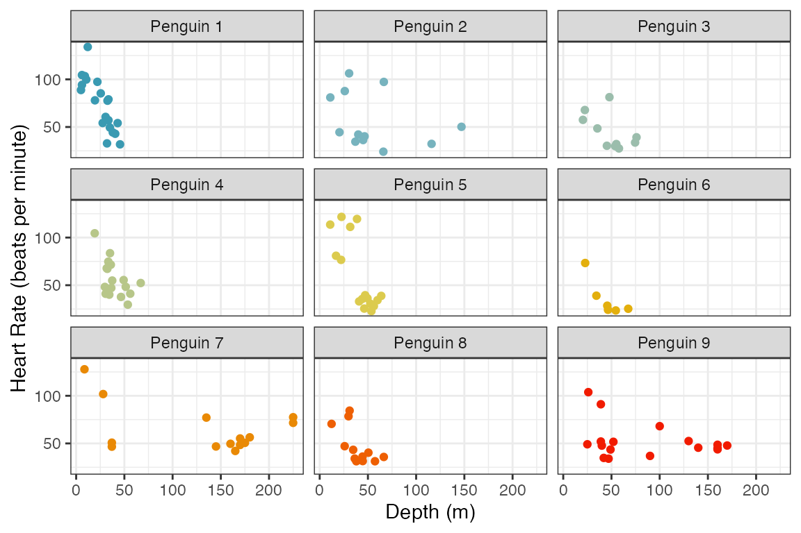
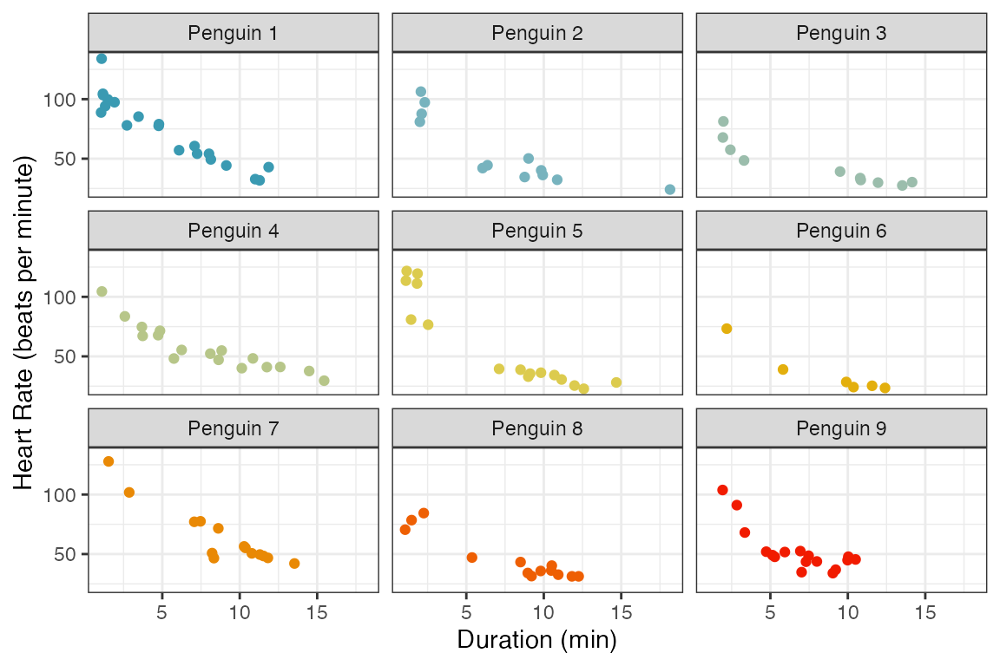
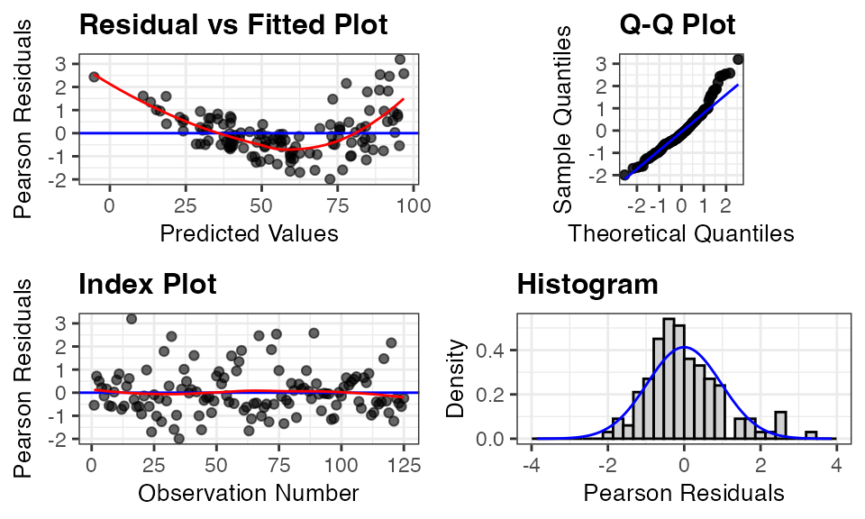
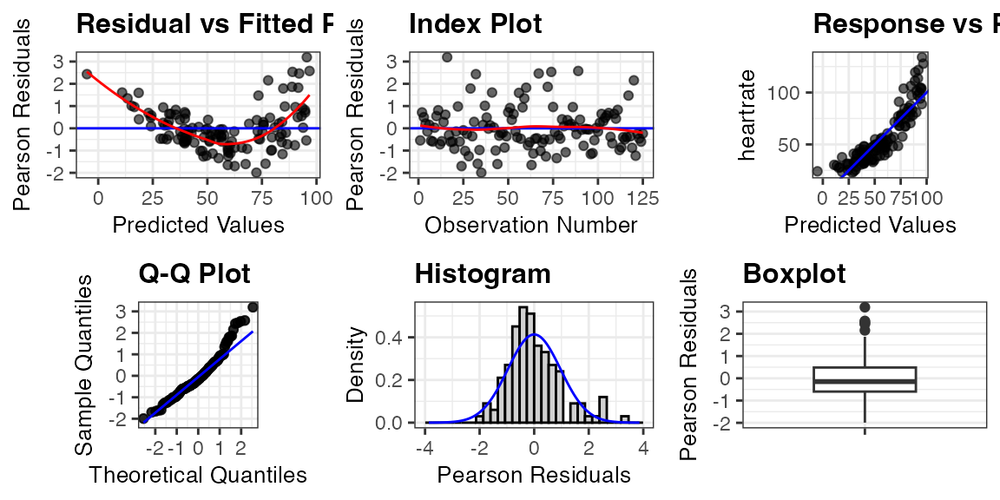
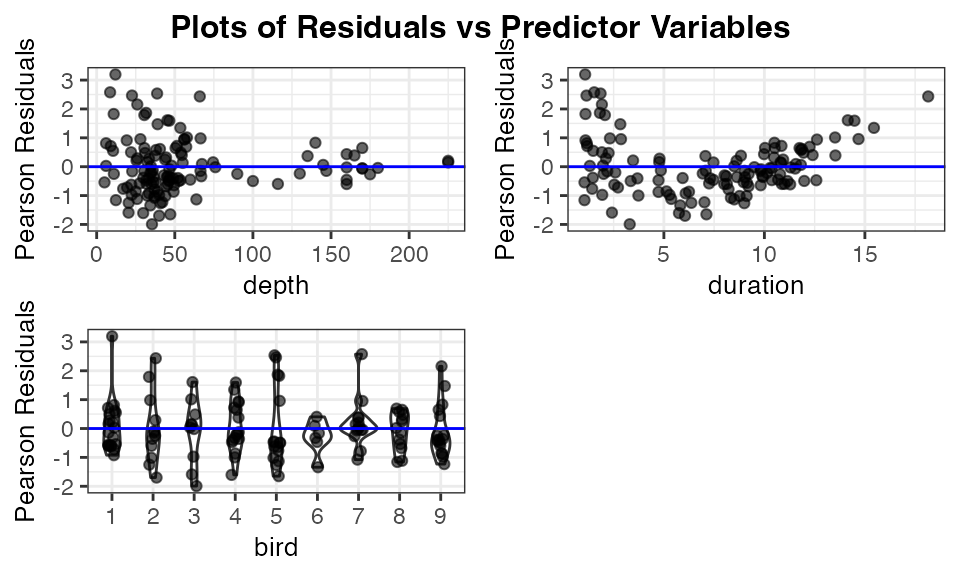
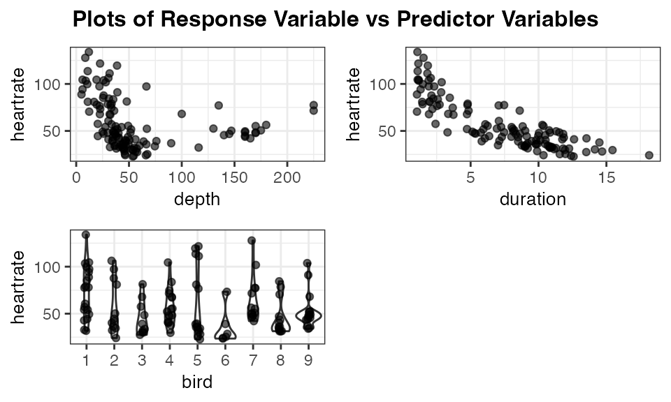
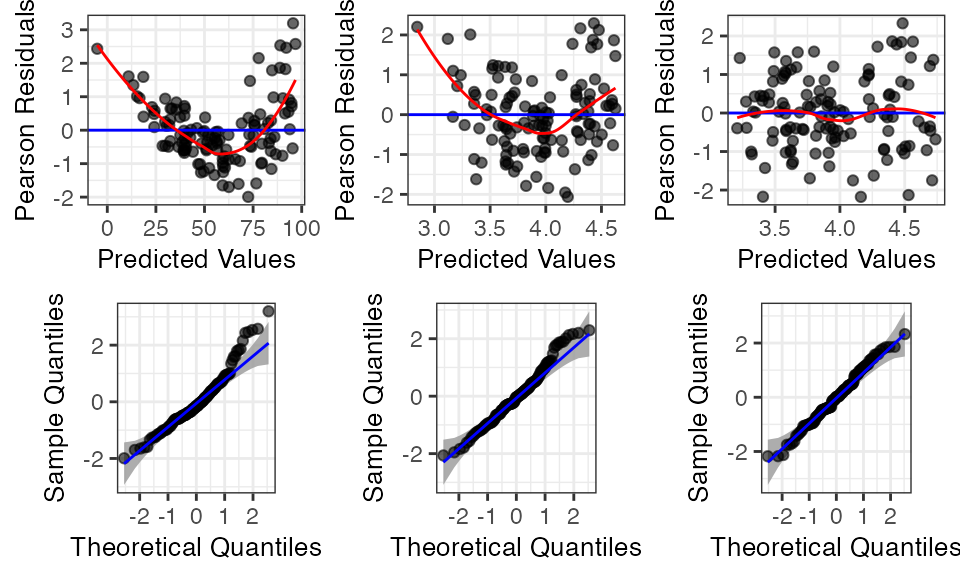
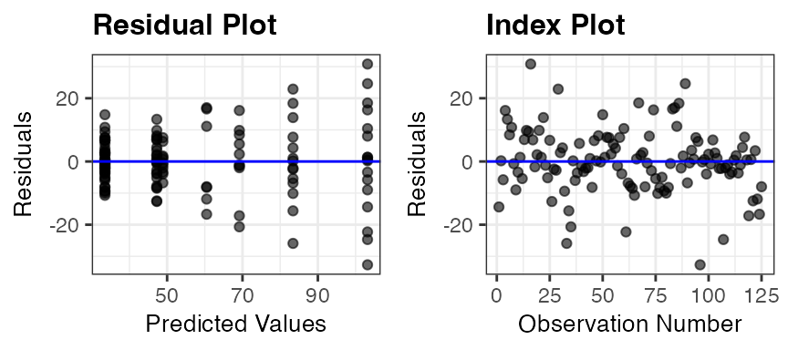
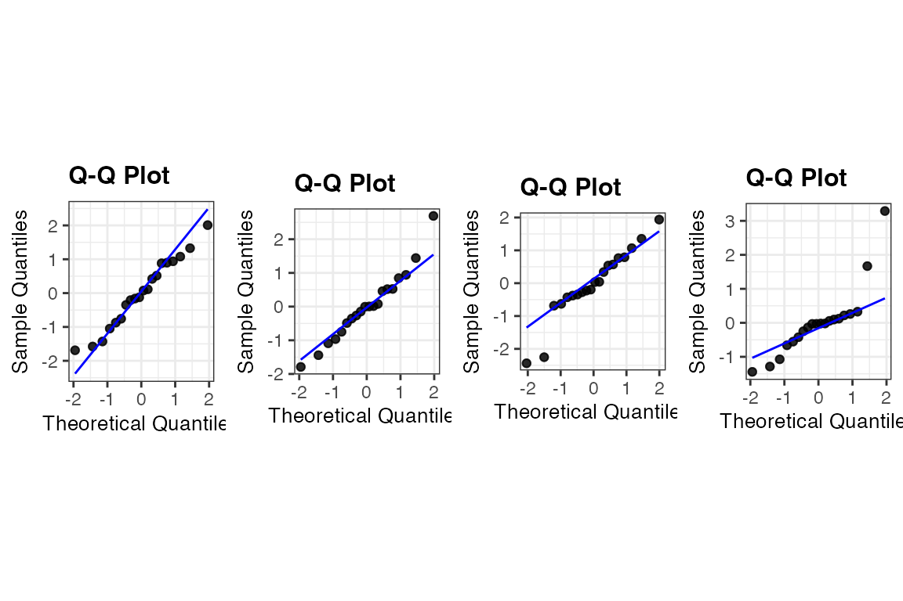

introduction.RmdggResidpanel was developed with the intention of providing an easier way to both create and view diagnostic plots for models in R. The graphics are created using ggplot2, and interactive versions of the plots are rendered using plotly. This vignette provides a brief introduction to ggResidpanel with information on how to install the package, a description of the functions included in the package, and examples. To learn more about ggResidpanel, read through the ggResidpanel Tutorial and User Manual, which contains the details for all of the functions in the package and demonstrates how to use them.
ggResidpanel has five functions:
resid_panel: Creates a panel of diagnostic plots of the
residuals from a modelresid_interact: Creates an interactive panel of
diagnostic plots of the residuals from a modelresid_xpanel: Creates a panel of diagnostic plots of
the predictor variablesresid_compare: Creates a panel of diagnostic plots from
multiple modelsresid_auxpanel: Creates a panel of diagnostic plots
based on the predicted values and residuals from models not included in
the packageCurrently, ggResidpanel allows the first four functions listed above
to work with models fit using the functions of lm and
glm from base R, lme from nlme, and
lmer or glmer from lme4 (or fit using
lmerTest).
Emperor penguins are able to dive under the water for long periods of
time. The dataset penguins included in ggResidpanel
contains information from a study done on the dives of emperor penguins.
The scientists who conducted the study were interested in understanding
how the heart rate of the penguins related to the depth and duration of
the dives. A device was attached to penguins that recorded the heart
rate of the bird during a dive.
The structure of the data are shown below. The data set has four variables:
There were 9 penguins included in the study with multiple observations taken from each bird and a total of 125 observations in the dataset.
str(penguins)
#> 'data.frame': 125 obs. of 4 variables:
#> $ heartrate: num 88.8 103.4 97.4 85.3 60.6 ...
#> $ depth : num 5 9 22 25.5 30.5 32.5 38 32 6 10.5 ...
#> $ duration : num 1.05 1.18 1.92 3.47 7.08 ...
#> $ bird : Factor w/ 9 levels "1","2","3","4",..: 1 1 1 1 1 1 1 1 1 1 ...The code below shows the number of observations per penguin. Penguin number 6 has the least with only 6, and penguin number 1 has the most with 20.
table(penguins$bird)
#>
#> 1 2 3 4 5 6 7 8 9
#> 20 12 10 17 16 6 14 13 17The figure below shows scatter plots of heart rate versus depth of a dive for each penguin. The points are colored by bird number. This data shows a decrease in heart rate as the depth of the dive increases, but the manner in which the heart rate decreases varies between penguins.

The next figure shows the heart rate versus duration of the dive for each penguin. Again, there is a clear decrease in heart rate as the duration of the dive increases. The trends are very similar between penguins.

To model the data, a linear mixed effects model is fit below with heart rate as the response variable. To start, depth and duration are included as fixed main effects in the model, and a random effect for penguin is specified.
The summary of the model is shown below.
summary(penguin_model)
#> Linear mixed model fit by REML ['lmerMod']
#> Formula: heartrate ~ depth + duration + (1 | bird)
#> Data: penguins
#>
#> REML criterion at convergence: 991.6
#>
#> Scaled residuals:
#> Min 1Q Median 3Q Max
#> -1.9927 -0.5966 -0.1473 0.4853 3.1947
#>
#> Random effects:
#> Groups Name Variance Std.Dev.
#> bird (Intercept) 53.7 7.328
#> Residual 144.8 12.033
#> Number of obs: 125, groups: bird, 9
#>
#> Fixed effects:
#> Estimate Std. Error t value
#> (Intercept) 94.38863 3.47662 27.150
#> depth 0.05961 0.03260 1.828
#> duration -5.72498 0.30836 -18.566
#>
#> Correlation of Fixed Effects:
#> (Intr) depth
#> depth -0.232
#> duration -0.418 -0.459resid_panel
There are four key assumptions to check for this model.
The first assumption can only be checked by considering the study
design. In our case, there is a dependence between observations taken
from the same penguin, and we already accounted for this by including a
random effect for penguin in the model. The other assumptions can be
checked by looking at residual diagnostic plots. These plots can be
easily created by applying the function resid_panel from
ggResidpanel to the model. By default, a panel with four plots is
created. This is demonstrated below by applying resid_panel
to the penguin_model. The default panel includes the
following four plots.
Residual Plot (upper left): This is a plot of
the residuals versus predictive values from the model to assess the
linearity and constant variance assumptions. The curving trend seen in
the penguin_model plot suggests a violation of the
linearity assumption, and there appears to be a violation of the
constant variance assumption as well since the variance of the residuals
is getting larger as the predicted values increase.
Normal Quantile Plot (upper right): Also known
as a qq-plot, this plot allows us to assess the normality assumption.
There appears to be a deviation from normality in the upper end of the
residuals from the penguin_model, but this is not as much
of a concern as linearity and constant variance issues.
Histogram (lower right): This is a histogram of
the residuals with a overlaid normal density curve with mean and
standard deviation computed from the residuals. It provides an
additional way to check the normality assumption. This plot makes it
clear that there is a slight right skew in the residuals from the
penguin_model.
Index Plot (lower left): This is a plot of the
residuals versus the observation numbers. It can help to find patterns
related to the way that the data has been ordered, which may provide
insights into additional trends in the data that have not been accounted
for in the model. There is no obvious trend in the
penguin_model index plot.
resid_panel(penguin_model)
All functions in the package include a plots option that
allows users to specify which plots to include in the panel. Users can
either specify an individual plot, a vector of plot names, or a
prespecified panel.
Plot Names:
"boxplot": A boxplot of residuals"cookd": A plot of Cook’s D values versus observation
numbers"hist": A histogram of residuals"index": A plot of residuals versus observation
numbers"ls": A location scale plot of the residuals"qq": A normal quantile plot of residuals"lev": A plot of standardized residuals versus leverage
values"resid": A plot of residuals versus predicted
values"yvp":: A plot of observed response values versus
predicted valuesNote that the plots of “cookd”, “ls”, and “lev” are only available
for models fit using lm and glm and cannot be
selected with resid_auxpanel.
Prespecified Panels:
"all": panel of all plots in the package that are
available for the model type"default": panel with a residual plot, a normal
quantile plot of the residuals, an index plot of the residuals, and a
histogram of the residuals"R": panel with a residual plot, a normal quantile plot
of the residuals, a location-scale plot, and a residuals versus leverage
plot (modeled after the plots shown in R if the plot
function is applied to an lm model)"SAS": panel with a residual plot, a normal quantile
plot of the residuals, a histogram of the residuals, and a boxplot of
the residuals (modeled after the residpanel option in proc mixed from
SAS)Note that the "R" option can only be used with models
fit using lm and glm.
Here is an example requesting a panel with all plots available for a
model fit using lmer.
resid_panel(penguin_model, plots = "all")
resid_interact
The static panel of plots does not allow one to easily identify an
observation associated with a point of interest. The function
resid_interact allows users to interact with the plots
thanks to plotly. The code below creates a panel with a residual plot
and qq-plot with interactivity. When the cursor is hovered over a point,
a tooltip appears with the x and y location of the point, the observed
values from variables included in the model associated with the point,
and the observation number. This function is meant to help users
identify outliers and points of interest in the plot.
resid_interact(penguin_model, plots = c("resid", "qq"))
#> Warning: The following aesthetics were dropped during statistical transformation: label.
#> ℹ This can happen when ggplot fails to infer the correct grouping structure in
#> the data.
#> ℹ Did you forget to specify a `group` aesthetic or to convert a numerical
#> variable into a factor?
#> The following aesthetics were dropped during statistical transformation: label.
#> ℹ This can happen when ggplot fails to infer the correct grouping structure in
#> the data.
#> ℹ Did you forget to specify a `group` aesthetic or to convert a numerical
#> variable into a factor?resid_xpanel
To further assess the issues with a model, it may be helpful to look
at plots of the residuals versus the predictor variables. This can be
done easily by applying the function resid_xpanel to the
model.
The code below creates a panel with a plot included for each
predictor variable in the penguin_model. That is, three
plots are created for the variables of depth, duration, and bird.
Pearson residuals are plotted on the y-axis for each of the plots. These
plots show a clear decrease in variation of the residuals as the value
of depth increases, and the nonlinear relationship appears to be related
to the variable of duration. The plot of residuals versus bird shows no
obvious trend and relatively constant variance across the penguins.
resid_xpanel(penguin_model, jitter.width = 0.1)
The function resid_xpanel has the option to plot the
response variable on the y-axis by setting
yvar = "response". The updated code and resulting panel of
plots is shown below. The plot of heart rate versus duration suggests
that including a quadratic term for duration may help improve the model
fit.
resid_xpanel(penguin_model, yvar = "response", jitter.width = 0.1)
resid_compare
To deal with the violations of the model assumptions in the
penguin_model, two new models are fit. The first
(penguin_model_log) uses a log transformation of the heart
rate as the response, and the second model
penguin_model_log2 uses both a log transformation of the
response and a quadratic term for duration.
penguin_model_log <-
lmer(
log(heartrate) ~ depth + duration + (1|bird),
data = penguins
)
penguin_model_log2 <-
lmer(
log(heartrate) ~ depth + duration + I(duration^2) + (1|bird),
data = penguins
)The function resid_compare allows the residual plots
from multiple models to be compared side by side. The first argument in
resid_compare is a list of the models to compare. In the
code below, the models fit to the penguin data are included
in the list, and the resid, and qq plots are
selected to be included in the panel to assess the linearity, constant
variance, and normality assumptions. Some additional options have also
been specified, which are available in other functions of the package as
well. The option of smoother = TRUE adds a smoother to the
residual plots, and qqbands = TRUE adds a 95% confidence
interval to the qq-plot. The option of title.opt = FALSE
removes the titles from the plots. The resulting panel includes plots
where each column contains the plots associated with one of the models.
The plots are ordered from left to right following the order the models
were specified in the list.
The log transformed model still shows some curvature in the residual plot and skewness in the normal quantile plot. However, the model with both the log transformation and a quadratic term for duration appears to meet all of the assumptions.
resid_compare(
models = list(penguin_model, penguin_model_log, penguin_model_log2),
plots = c("resid", "qq"),
smoother = TRUE,
qqbands = TRUE,
title.opt = FALSE
)
resid_auxpanel
The function resid_auxpanel has been included in the
package to allow for the creation of diagnostic plot panels with models
that are not included in the package. For example, if there was a desire
to try fitting a regression tree to the penguins data, it
would not be possible to create residual plots with any of the
ggResidpanel functions considered so far.
A regression tree is fit to the penguins data below
using the rpart package.
penguin_tree <- rpart::rpart(heartrate ~ depth + duration, data = penguins)We can extract the predicted values from the regression tree and use these to compute the residuals for the model.
penguin_tree_pred <- predict(penguin_tree)
penguin_tree_resid <- penguins$heartrate - penguin_tree_predThe function resid_auxpanel accepts the residuals and
predicted values as inputs and uses these to create diagnostic plots.
Since some of the plots available in the package require additional
information from a model (cookd, lev, and
ls), they cannot be used with resid_auxpanel
as previously mentioned.
The code below takes the residuals and predicted values from
penguin_tree and creates a panel with a resid
and index plot. The residual plot shows an increase in
variance, and it may be of interest to adjust for this in some way with
the model. The index plot does not show any concerns.
resid_auxpanel(
residuals = penguin_tree_resid,
predicted = penguin_tree_pred,
plots = c("resid", "index")
)
resid_calibrate
The function resid_calibrate creates a panel of
diagnostic residual plots from a fitted model and simulated responses
from the same model. This is used to calibrate expectations for
simulation variability when assumptions are true (see ), to compare to
the actual observed residuals in any of a suite of diagnostic plots.
This function requires the fitted model and the data set. However, for
now, it only works with lm models.
penguin1_model <-
lm(
heartrate ~ depth + duration,
data = penguins |> dplyr::filter(bird == 1)
)
resid_calibrate(
model = penguin1_model,
plots = "qq",
nsim = 3,
shuffle = TRUE,
identify = TRUE
)
#> [1] "Real residuals are in column 4"